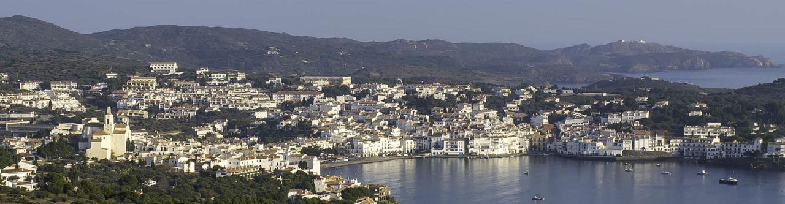

Ruta · Roses
Aquesta entretinguda ruta que ressegueix el GR92 en el tram entre Cala Montjoi i Cadaqués , transcorre pràcticament en la seva totalitat dins del Parc Natural del Cap de Creus. Recorre algunes de…